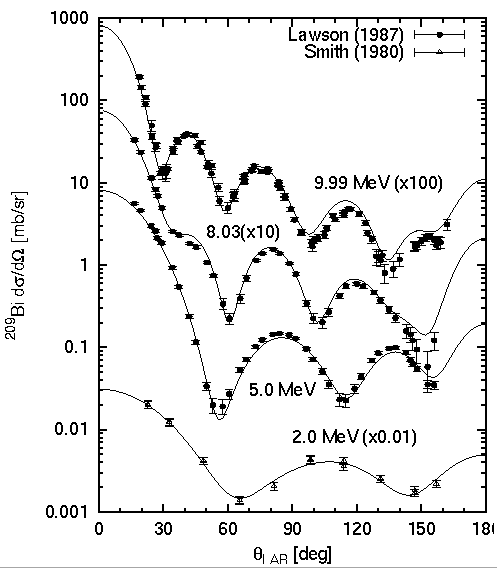

set term postscript eps enhanced
set output "angdist.eps"
set size 0.55,0.9
set logscale y 10
set xtics 0,30
set mytics 10
set mxtics 3
set xlabel "{/Symbol q}_{LAB} [deg]"
set ylabel "^{209}Bi d{/Symbol s}/d{/Symbol W} [mb/sr]"
set xrange [ 0 : 180 ]
set yrange [ 0.001 : 1000 ]
set label "9.99 MeV (x100)" at 100,10
set label "8.03(x10)" at 50,2.5
set label "5.0 MeV" at 70,0.03
set label "2.0 MeV (x0.01)" at 90,0.008
set linestyle 1 lt 1 pt 7 ps 0.7
set linestyle 2 lt 1 pt 8 ps 0.7
set linestyle 3 lt 1 lw 1
plot "angdist.exp" index 1:1 using 1:2:3 title "Lawson (1987)" with yerrorbars linestyle 1,\
"angdist.exp" index 2:2 using 1:($2*10):($3*10) notitle with yerrorbars linestyle 1,\
"angdist.exp" index 3:3 using 1:($2*100):($3*100) notitle with yerrorbars linestyle 1,\
"angdist.exp" index 0:0 using 1:($2*0.01):($3*0.01) title "Smith (1980)" with yerrorbars linestyle 2,\
"angdist.cal" using 1:($2*0.01) notitle with lines linestyle 3,\
"angdist.cal" using 1:3 notitle with lines linestyle 3,\
"angdist.cal" using 1:($4*10) notitle with lines linestyle 3,\
"angdist.cal" using 1:($5*100) notitle with lines linestyle 3
pause -1
